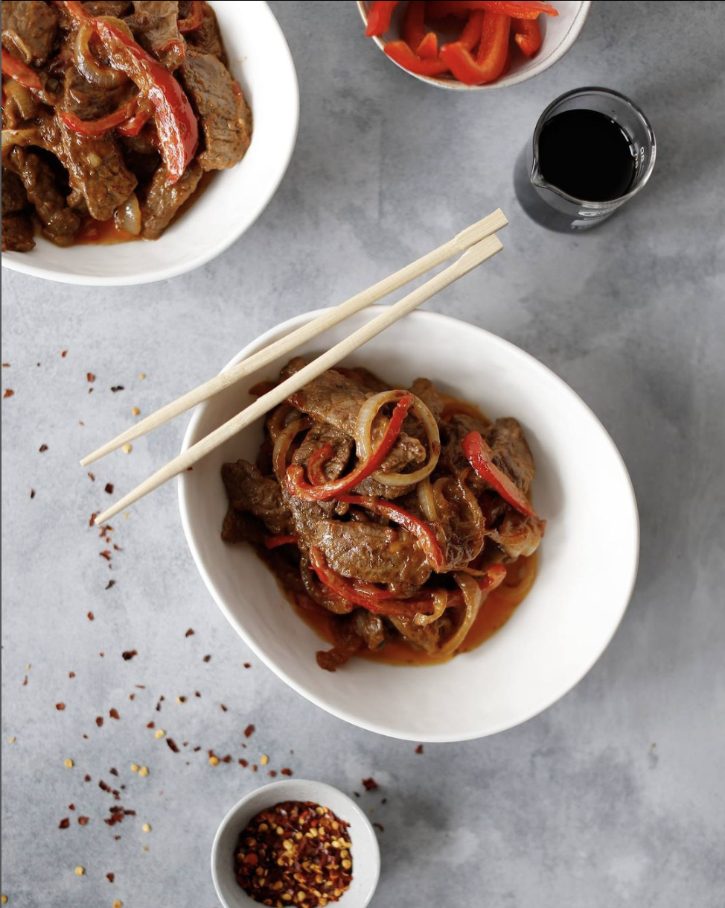

Description
Would you like an idea for supper? Would you like an idea for something really delicious? For something that'll have you in peanut butter and coconut heaven? Something that you can whip up in less than 20 minutes? Ok, great, see my recipe below for delicious Beef In Satay Sauce :)
Serves 2.
Ingredients
- Oil for frying
- ± 400 grams beef strips, I used rump
- Fresh chilli or chilli flakes – I used flakes
- 1 red capsicum/red pepper thinly sliced
- 1 onion thinly sliced/li>
- 1/4 cup and a bit of smooth peanut butter – I like to measure a bit more than the required amount for all the sauce ingredients. The more sauce the better 🙂
- 1/4 cup and a bit of coconut cream
- ....
Steps
- If you have decided on jasmine rice, then I suggest you start with it first as it takes slightly longer than the beef in satay sauce to cook.
- Heat up your wok with a bit of oil in it, it must be nice and hot (or a normal frying pan) and then stirfry the beef strips in 2 batches until cooked.
- Remove your beef, add a bit more oil and then fry the chilli, capsicum and onion until soft; remove them from the pan.
- Combine the peanut butter, coconut cream, sweet chilli sauce and soy sauce in the wok/pan on a medium heat and bring to a boil before re-adding the beef strips and onion and capsicum to the mixture. Coat everything evenly and remove from the heat.
- Sit back in your stretchy pants and enjoy!
|

|